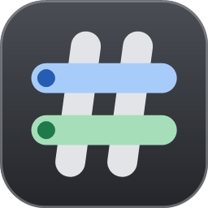

ご紹介
#Hashelf
ハッシェルフ
よく使うファイル・フォルダー・Web ページを 1 か所にまとめ、キー操作ひとつで呼び出して開く Windows 用のランチャーです。
グループとタグで整理し、名前や「#タグ」ですぐに見つけられます。
全体の概要
ファイル・フォルダーデスクトップやエクスプローラーにあるもの
＋
Web ページブラウザで開いている URL
→ドラッグ・
貼り付けで登録
お使いのパソコン
Hashelf（このアプリ）登録 → グループ・タグで整理 → 呼び出して開く
data フォルダ登録した項目・タグ・設定（アプリのフォルダの中）
画面Ctrl + Alt + Space でいつでも呼び出す
→開く
開く先ふだん使っているブラウザ、ファイルに関連付けられたアプリ、エクスプローラー
パソコンにあるもの・Webこのアプリ利用者の操作
インターネットとの通信は行いません。
登録した Web ページは、開くときにブラウザが表示します。
こんな困りごとはありませんか
- デスクトップがショートカットで埋まり、目的のものを探すのに時間がかかる。
- よく使うフォルダーが深い階層にあり、毎回たどるのが面倒。
- ファイル・フォルダー・ブックマークが別々の場所にあり、仕事の道具がばらばら。
- フォルダーで分けると、「毎日使うもの」のように分類をまたいだ探し方ができない。
使い方の流れ
登録するファイル・フォルダー・URL をドラッグや貼り付けで追加します。
›
整理するグループで分け、タグを付けます。
›
呼び出すどの作業中でも Ctrl + Alt + Space で開きます。
›
探す名前や「#タグ」で絞り込みます。
›
開くEnter かダブルクリックで開き、画面は小さくなります。
グループに付けたタグは中の項目にも引き継がれるので、整理するほど探しやすくなります。
ご紹介
特長
タグをグループから引き継ぐグループに付けたタグは、中の項目すべてに付いているものとして扱います。
引き継いだタグは点線の枠で表示し、項目に直接付けたタグと見分けられます。
「#タグ」ですぐに絞り込む検索欄に「#」と入力すると、今あるタグが件数付きで候補に出ます。
名前とタグを組み合わせて絞り込むこともできます。
キー操作ひとつで呼び出すどのアプリを使っていても、Ctrl + Alt + Space で開きます（キーは設定で変えられます）。
検索して Enter で開くまで、キーボードだけで操作できます。
画面の隅で小さく待機使わないときは小さいアイコンになり、画面の隅に残ります。
クリックで開き、ドラッグで好きな場所に動かせます。
デスクトップのショートカットを片付けるショートカットを登録すると、アプリのフォルダーに取り込み、元のファイルはごみ箱に移します。
この動きは設定で止められます。
データは手元のフォルダーだけ登録した内容は、展開したフォルダーの中に保存します。
フォルダーごとコピーすれば、バックアップや持ち運びができます。
今後の予定
- 登録した内容を書き出して、別のパソコンに読み込めるようにする。
制作について
このアプリは、作者が AI コーディングエージェント（Cursor）と協働して開発しました。
要件と設計の判断、動作の確認は作者が行い、コードの作成は主に AI エージェントが担当しています。
このあとの画面の例に写っている会社のフォルダー名や URL（example.com）は、すべて架空のものです。
はじめかた
はじめかた
動作環境：Windows 10 / 11（64 ビット版）。
インストールは不要で、ほかのソフトを別に入れる必要もありません。
Mac やスマートフォンには対応していません。
- ダウンロードする
作者が公開している配布ページ（Google Drive）で zip ファイルをダウンロードします。
Google Drive が「ウイルス スキャンを実行できません」などの確認を表示した場合は、内容を確認のうえダウンロードを続けてください。
- 展開する
ダウンロードした zip ファイルを右クリックし、「すべて展開」を選びます。
zip のまま中のファイルを開くと、正しく動きません。
展開する前に、zip ファイルを右クリック →「プロパティ」→「許可する」にチェック →「OK」とすると、次の手順の警告が出なくなる場合があります。
- 起動する
展開したフォルダの Hashelf.exe をダブルクリックします。
ランチャーの画面が開き、画面右下の通知領域にもアイコンが出ます。
初めて起動するとき、次のような警告が出ることがあります。
「詳細情報」を押し、表示された「実行」を押してください。
① 最初の画面
Windows によって PC が保護されました
Microsoft Defender SmartScreen は認識されないアプリの起動を停止しました。このアプリを実行すると、PC に問題が起こる可能性があります。
詳細情報
実行しない
② 「詳細情報」を押した後
Windows によって PC が保護されました
Microsoft Defender SmartScreen は認識されないアプリの起動を停止しました。このアプリを実行すると、PC に問題が起こる可能性があります。
アプリ: Hashelf.exe
発行元: 不明な発行元
実行実行しない
画面は一例です。
Windows のバージョンによって表示が異なります。
この警告は、発行元を証明する電子署名を付けていないアプリで表示されます。
はじめかた
はじめかた（続き）
- 試してみる
最初は何も登録されていません。
よく使うフォルダーを画面にドラッグするか、「＋フォルダー」で選んで登録します。
登録した項目を右クリックして「編集…」を選び、タグを付けてみてください。
検索欄に「#」と入力すると、付けたタグが候補に出ます。
ドラッグするときは、右上のピンのボタン（固定）をオンにすると、画面が小さくならずに済みます。
- 呼び出す・しまう
Ctrl + Alt + Space で開き、もう一度押すか Esc で小さいアイコンに戻ります。
ほかのウィンドウをクリックしたときも、小さいアイコンに戻ります。
- 終了する
通知領域のアイコンか小さいアイコンを右クリックし、「終了」を選びます。
ランチャーの画面を閉じても、アプリは終了せず小さいアイコンになります。
Windows 起動時に開始
通知領域のアイコンを右クリックして「Windows 起動時に開始」を選ぶと、Windows にサインインしたときに自動で起動します。
この設定をオンにしたときだけ、Windows の設定（レジストリ）に登録します。
削除するとき
「Windows 起動時に開始」をオンにしている場合は、先にオフにします。
アプリを終了してから、展開したフォルダごと削除してください。
このアプリは、展開したフォルダの外にファイルを作りません。
オフにせずに削除した場合は、タスク マネージャーの「スタートアップ アプリ」に「Hashelf」が残ります。
そのままでも害はありませんが、右クリックして「無効化」を選べば止められます。
うまく動かないとき
- 呼び出すキーで開かない：ほかのアプリが同じキーを使っていると、起動時に「登録できませんでした」と通知が出ます。
通知領域のアイコンか、小さいアイコンをクリックして開き、右上の歯車のボタン（設定）の「呼び出すキー」で別の組み合わせを選んでください。
- ドラッグしようとすると画面が小さくなる：右上のピンのボタン（固定）をオンにしてから、ドラッグしてください。
- 「見つかりません。移動または削除された可能性があります。」と出る：登録したファイルやフォルダーが移動または削除されています。
右クリックの「編集…」で場所を選び直してください。
利用条件
利用条件の要約
ご利用の前に、同梱の LICENSE.txt（利用条件）をお読みください。
主な内容は次のとおりです。
正式な内容は LICENSE.txt の記載に従います。
| 利用 | 個人・法人、営利・非営利を問わず、無償で利用できます。 |
|---|
| 再配布 | 作者の許諾なく、本アプリを第三者に配布することはできません（改変の有無を問いません）。
ダウンロードページへのリンクを伝えることは自由です。 |
|---|
| 改変など | 本アプリの改変、改変したものの配布、販売・貸与はできません。 |
|---|
| データ | 登録した内容は、お使いのパソコンの中（アプリのフォルダ内）にだけ保存します。
インターネットとの通信は行わず、作者が情報を集めることもありません。 |
|---|
| 無保証 | 本アプリは現状のまま提供され、作者は一切の保証をしません。
本アプリは、操作に応じてファイル・フォルダー・URL を開き、設定によりショートカットのファイルをごみ箱に移します。
内容を確認のうえ、ご自身の判断でお使いください。 |
|---|
| 責任の制限 | 本アプリの利用によって生じた損害について、作者は責任を負いません（作者の故意または重大な過失による場合を除きます）。 |
|---|
| 外部部品 | 本アプリに含まれる外部の部品には、それぞれのライセンスが適用されます（同梱の THIRD-PARTY-NOTICES.txt）。 |
|---|